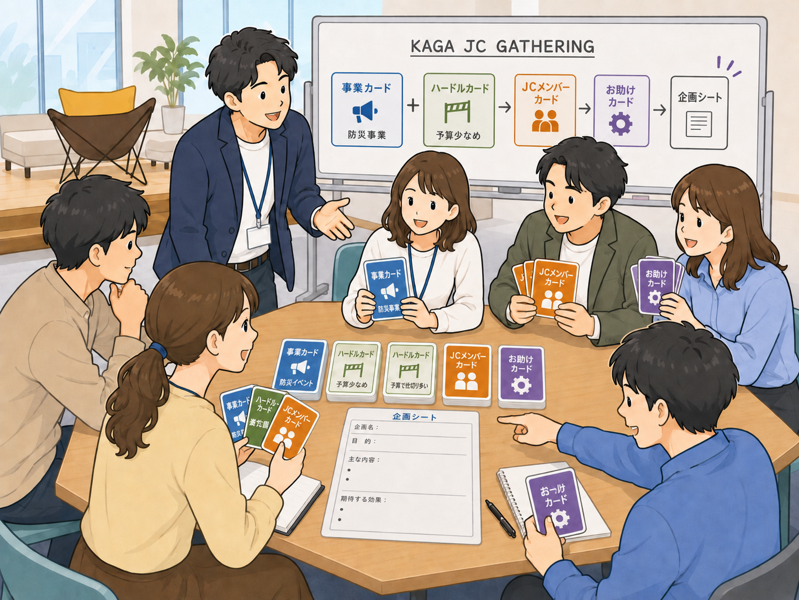
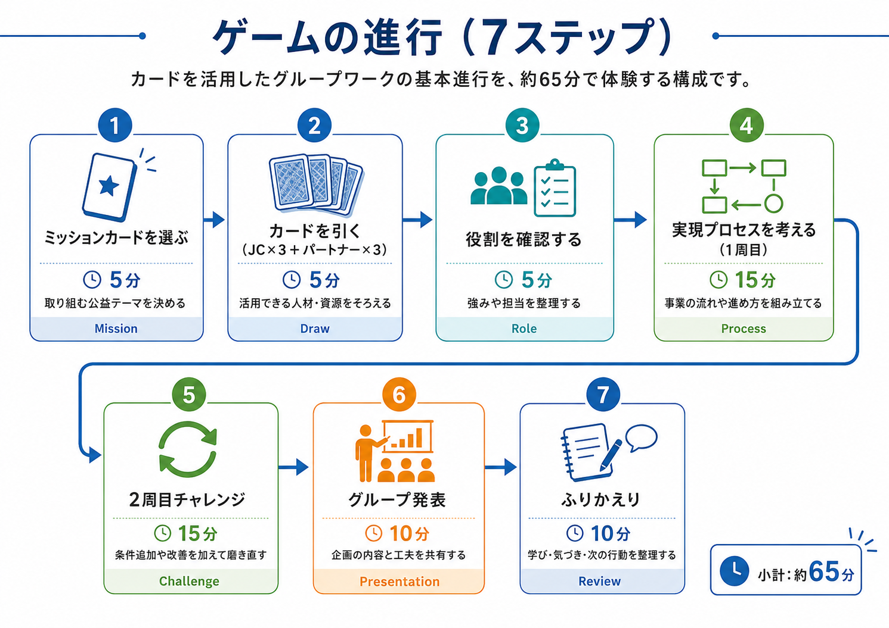
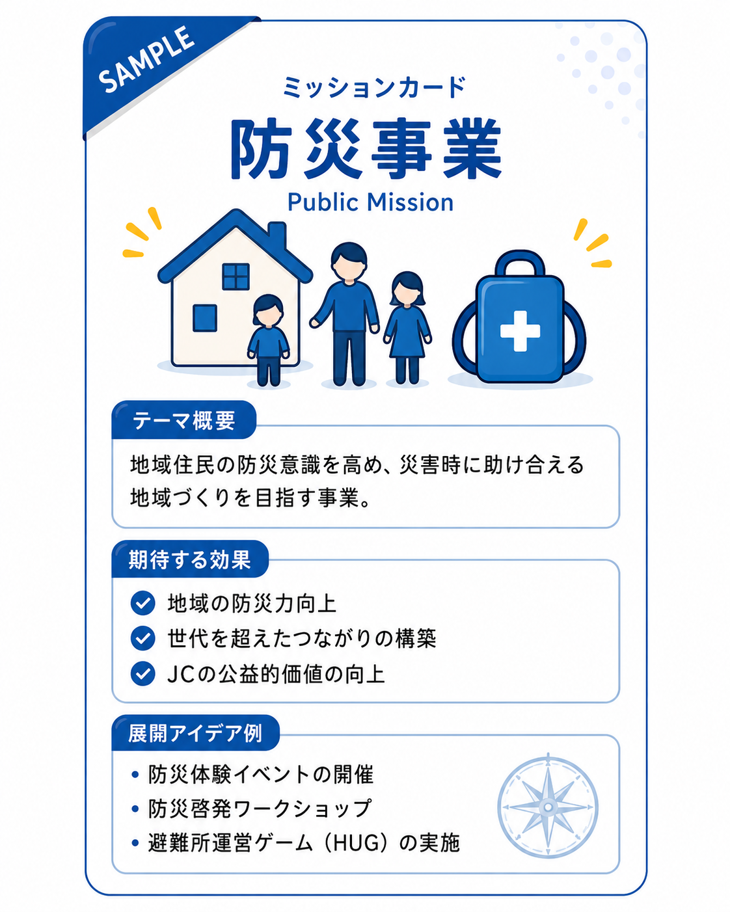
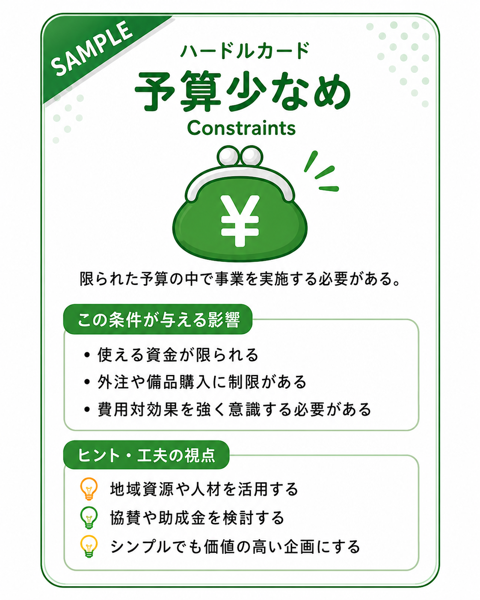
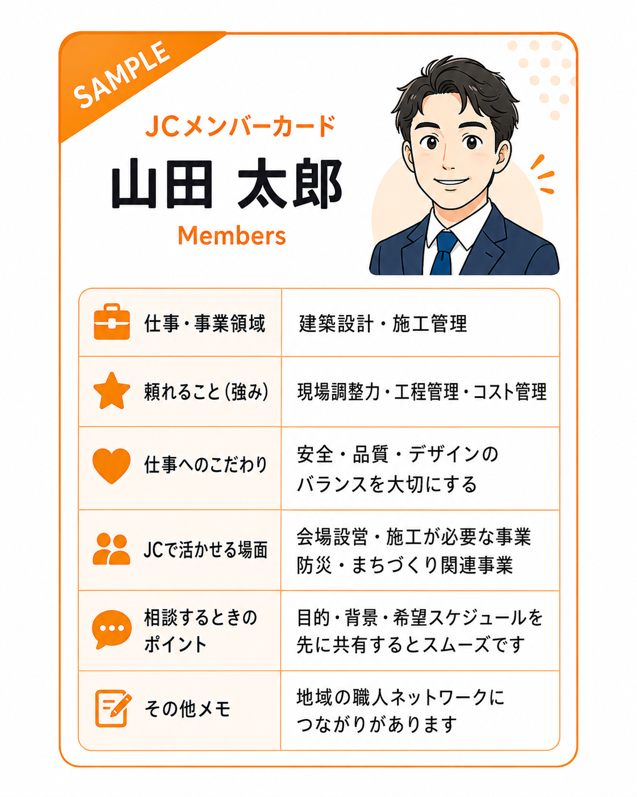

OVERVIEW

「KAGA JC GATHERING（仮）」は、各参加者が「自分が公益事業の委員長になったら」と想定し、加賀JCメンバーカードを使ってチームを編成しながら、どのような公益事業を実現できるかを考える参加型カードワークです。困った時にはお助けカード（正副・理事・室長等の上位役職）を必要に応じて使うことで、組織全体の力を借りる感覚も同時に養います。レクリエーションではなく、当事者意識／相互理解／頼り方の発見／JC活動への主体的な参加意欲を高めるためのアカデミー研修教材として設計します。
本仕様書は議案本文に対応する詳細実施要項です。事業カード／ハードルカード／カードサンプルの個別ページからも本書を相互参照できます。
ゲームの進行（7ステップ）
Game Flow
- 事業カードを選ぶ：各グループで公益事業テーマを1枚選択。
- カードを引く：JCメンバーカード6枚を引く。
- 役割を確認する：各カードを読み合わせ、機能・実働・動員・広報・調整・設営・飲食・安全管理の役割を確認。
- 実現プロセスを考える：自由な組み合わせで「企画→準備→実施→広報→事後フォロー」を設計。
- 2周目チャレンジ：1周目の設計（ハードル1枚下での設計）に対し、ハードルカードをさらに2枚追加投入して合計3枚の複合制約下にする（子育て世代が多い／仕事の繁忙期と重なる／予算少なめ 等の現実的制約）。同じメンバー編成のまま「条件が複雑化しても事業を実現する設計」を再構築することで、柔軟性と当事者意識を体験する。
- グループ発表：選んだ事業／活用カード／役割分担／1・2周目の工夫を共有。
- ふりかえり：「自分が委員長／副委員長／運営幹事だったらどうするか」「今後どのようにメンバーに頼れるか」「自分は何で貢献できるか」を言語化（ふりかえりシートに記入）。
※ 図中ステップ②は「JC×3」と表記されていますが、最新仕様では JCメンバーカード×6枚を引きます（図は次回再生成時に修正予定）。
① 事業カード
Public Business
加賀JCやJCIでよく行う公益事業テーマを扱う題材カード。「事業を考える起点」として使用します。
テーマ例
防災事業 青少年育成事業 家族向け例会 地域交流事業 地域清掃活動 まちづくり事業 会員交流事業 地域資源活用事業 拡大につながる地域連携事業
参考：審議対象資料 6「カード一覧（全4種）」の事業カード詳細を参照。
② ハードルカード
Constraints
事業実施時に起こり得る制約条件を扱うカード。事業実現に「現実的な解像度」を加える役割を持ちます。
条件例
予算少なめ 初参加メンバーが多い 家族連れ参加可 地域資源を活用する 役割分担を明確にする 事業後の広報が必要 雨天対応が必要 拡大対象者との接点をつくる 子育て世代が多い 仕事の時間が合わないメンバーが多い 仕事の繁忙期と重なる 移動距離が遠いメンバーがいる 介護・家庭事情のメンバーがいる オンライン・ハイブリッド対応が必要
参考：審議対象資料 6「カード一覧（全4種）」のハードルカード詳細を参照。
③ JCメンバーカード
Members
会員の仕事・強み・頼れる領域を可視化する教材カード。「どのような場面で頼り合えるか」を理解する起点です。
記載項目氏名／仕事・事業領域／頼れること／仕事へのこだわり／JCで活かせる場面／相談するときのポイント
参考：審議対象資料 6「カード一覧（全4種）」のJCメンバーカード サンプルを参照。
④ お助けカード
Helpers事業実施で困った時に「頂処に頼れる上位役職の方」を可視化する教材カード。各参加者が自分を仮想委員長として事業を組み立てる中で、ピンチ場面や判断に迷う場面で必要に応じて使用する救援カードとして位置づけます。
扱う対象理事長／副理事長／三十代代表／会員開発委員会室長／他委員会委員長クラス／前年度幹事 など、組織内で頼れる上位役職・先輩
記載項目役職名／所掌領域／頼れること／使用タイミング例（資金推薦／人脈紹介／ノウハウ伝授／対外調整補助 など）
※本人または事業者の承諾を得た情報のみを扱う。事業終了後、カード化は次年度議案へ引き継ぎ可能。
参考：審議対象資料 6「カード一覧（全4種）」のお助けカード サンプルを参照。
当日の役割設計
See 審議対象資料6当日は運営本部（会員開発委員会）／テーブルゲームマスター（参加委員長）／メンター（正副メンバー）の3層で運営します。
担当範囲・問いかけ例・NG行動・配置イメージなど詳細は当日実施要項：当日の役割設計を参照してください。
キット仕様（DIY）
Reusable KitA4カラー用紙印刷＋ダンボール型紙等で誰でも再現できるキットとして整備します。運営継承・他LOM展開を可能にする設計です。
| パーツ | 材料・方法 | 備考 |
|---|---|---|
| カード本体（4種） | A4カラー用紙にカード4〜6面付けで印刷／カット | 4カラー（種類別カラーコード）で識別 |
| カード台紙 | ダンボール型紙に貼付、または厚紙ラミネート | 耐久性・再利用性を確保 |
| カードホルダー | 市販カードスタンドまたは段ボール製スタンド | グループテーブル毎に1セット配置 |
| ワーク備品 | 付箋／太字ペン／シール／模造紙 | グループ発表用 |
| 収納 | A4サイズ書類ケース×グループ数 | キット単位で持ち運び・保管可能 |
運営・プライバシー配慮
Governance自己開示の範囲：個人の私生活や家庭事情、趣味、性癖などのプライバシーには踏み込みません。扱う情報は、青年経済人としての仕事観・仕事へのこだわり・地域での役割・JC活動で活かせる強み・仲間に頼ってほしいことに限定します。
カード作成時の承諾取得：JCメンバーカードは、本人の承諾を得た範囲の情報のみカード化する。書面または電子フォームで承諾を取得し、変更要望はいつでも反映できる運用とする。
事業後の広報配慮：個人カードの詳細は公開せず、事業趣旨や学びの内容を中心に発信する。
配布物の扱い：参加者全員への配布物は「景品」ではなく、共助アクションキット／研修教材／公益事業啓発品として扱う。表彰品は抽選景品ではなく、共助行動や提案の質を称えるものとする。
キット二次利用：他LOMへの展開時は、個人を特定し得る情報を除外し、テンプレートのみ提供する。